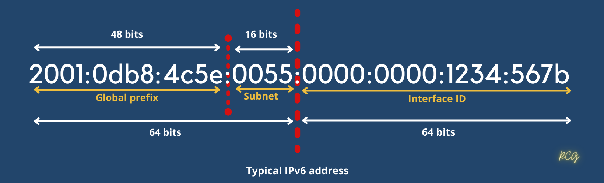

IPv6
Address space = 3.4 x 1038 addressess
Size of a address = 128 bits long
IPv6 also allows multiple address for hosts and networks.
Includes an expanded use of multicast communication.(One device sending to many hosts or ta a selected group of hosts. This boots efficiency of networks because communication will be more specific.)
No broadcast (But IPv6 use multicast insted).

2001:0db8:4c5e:0055:0000:0000:1234:567b
Simple Rules
-
You can drop the leading zeros in each of the individual blocks.
- 2001:db8:4c5e:55:0:0:1234:567b
-
We can remove the two consecutive blocks of zeros by replacing them with a doubled colon.
2001:0db8:4c5e:0055:0000:0000:1234:567b into
2001:db8:4c5e:55::1234:567b
- IMPORTANT CONDITION: You can replace only one continuous block of such zeros in an address.
2001:0000:0000:0012:0000:0000:1234:567b
2001::12::1234:567b wrong way
2001:0:0:0012::1234:567b correct way
IPv6 Address types
Multicast, Unicast, Anycast Broadcast has been removed from ipv6 due to inefficiency.
-
Unicast - Packets address to a unicast address are delivered to a single interface. For loadbalancing, multiple interfaces accross several devices can use the same address. We will call this as 'AnyCast' address. There are different types of unicast addresses.
- Global unicast address (2000::/3) - These are publicly routable addresses.
- Link-local address (FE80::/10) - Like automatic private IP address(APIPA). Not routable. Help to create a temporary lan together for meetings or create a small LAN that is not going to be routed but still can share and access files and services locally.
- Unique-local address (FC00::/7) - Non routable over the internet. But nearly globally unique. Designed to replace site-local address. So the basically do almost exctly what IPv4 private addresses do (Allow communication through a site while being routable to multiple local networks).
-
Multicast address (FF00::/8) - Packets addressed to multicast address are delivered to all interfaces turned into the multicast address. Always start with "FF".
- Anycast address - Like multicast address, Anycast address identify multile interfaces on multiple devices. But the anycast packet is delivered only to a one device. It is the closest device to the source device. (Closest device will find using routing distance). This is a very special address. Can assign single address to multiple devices. AKA "one-to-nearest" address. Typically only configured on routers. (Never on hosts) and source address could never be an anycast address.
IPv6 Special addresses
| Address | Description |
|---|---|
| 0:0:0:0:0:0:0:0 | Equals to ::. IPv4 equivalent=0.0.0.0 Source address of a host before the host receive ip from dhcp server. |
| 0:0:0:0:0:0:0:1 | Equals to ::1. IPv4 equivalent = 127.0.0.1 [Loopback address] |
| 0:0:0:0:0:0:192.168.100.1 | How an IPv4 address would be written in a mixed IPv6/IPv4 network environment |
| 2000::/3 | Global unicast address |
| FC00::/7 | The unique local unicast range |
| FE80::/10 | The link-local unicast range |
| FF00::/8 | The multicast range |
| 3FFF:FFFF::/32 | Reserved for examples and documentations |
| 2001:0DB8::/32 | Reserved for examples and documentations |
| 2002::/16 | Used with 6-to-4 tunnling. Which is an IPv4-to-IPv6 transition system. This structure allows IPv6 packets to be tansmitted over an IPv4 network without the need to configure explicit tunnels |